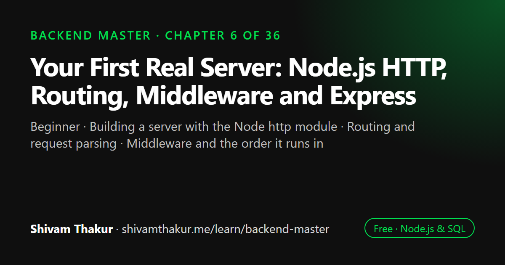

Chapter 6 of 36 · Beginner
Your First Real Server: Node.js HTTP, Routing, Middleware and Express
Your First Real Server — Routing, Middleware and Express

A backend server is a program that listens on a port and turns requests into responses. This chapter builds one with Node's http module, then Express, covering routing, middleware order, error handling and project structure, and creates the first ShopLine endpoints.
In this chapter you will learn
- Building a server with the Node http module
- Routing and request parsing
- Middleware and the order it runs in
- Centralised error handling
- Structuring an Express project
6.0 Why This Chapter Matters
Part 1 gave you the foundations. Now we start building.
In Chapter 3 we wrote an entire products API with the raw http module. It worked, and it taught you what HTTP really is. But look at what we had to do by hand:
- Parse the URL and match routes with regular expressions.
- Collect the request body chunk by chunk and
JSON.parseit. - Set headers and status codes manually on every response.
- Wrap everything in one giant
try/catch.
Add authentication, logging, validation, rate limiting and file uploads, and that single createServer function becomes an unreadable monster.
This chapter solves it with two ideas:
- Routing: mapping
METHOD + pathto a function, declaratively. - Middleware: a pipeline of small functions that every request flows through.
Then we meet Express, the most widely used Node web framework, and use it to start ShopLine, the project that will grow through the rest of the book.
By the end you will be able to:
- Explain exactly what middleware is by having built your own mini-Express.
- Build a clean, modular Express API with routers, error handling and a 404 handler.
- Read
req.params,req.queryandreq.bodyconfidently. - Structure a project so it stays maintainable.
6.1 Routing: The Core Idea
A route is a rule: "when a request with this method and this path arrives, run this function."
GET /products → listProducts()
GET /products/:id → getProduct()
POST /products → createProduct()
DELETE /products/:id → deleteProduct()In raw Node we did this with if/else. A framework turns it into a table the framework consults for you. Conceptually it is a lookup: given (method, path), find the handler. (Real routers store paths in a trie or radix tree for speed. Yes, the Trie from our DSA book, Chapter 10, runs inside the framework you're about to use.)
Path parameters
/products/:id is a pattern. The part after : is a variable captured from the URL:
pattern: /products/:id
request: /products/42 → params = { id: '42' } (always a string!)
request: /products → no match6.2 Middleware: The Most Important Concept in Web Frameworks
The assembly line
Imagine a factory assembly line. A product (the request) moves along a conveyor belt. At each station a worker does one job: inspect it, label it, wrap it. Any station can also reject the product and send it back early. At the end, the finished product leaves.
Middleware is the same:
request ──▶ [ requestId ] ──▶ [ logger ] ──▶ [ parse JSON ] ──▶ [ auth ] ──▶ [ route handler ] ──▶ response
adds an id starts timer fills req.body blocks if does the real
not logged in workThe definition
A middleware is a function
(req, res, next)that can read/modify the request and response, then either end the response itself or callnext()to pass control to the next function in line.
Three possible outcomes for any middleware:
- Do something, call
next(): pass it along (logging, parsing). - Send a response, don't call
next(): stop the line (auth failure → 401). - Call
next(error): jump to the error-handling middleware.
Build it yourself: a mini-Express in 35 lines
The best way to understand middleware is to build the machinery. This is a genuine, working miniature of Express's core:
// mini.js
import http from 'node:http';
export function miniExpress() {
const stack = []; // the ordered list of middleware & routes
const add = (method) => (path, handler) => stack.push({ method, path, handler });
const app = {
use: (handler) => stack.push({ method: null, path: null, handler }),
get: add('GET'),
post: add('POST'),
};
app.listen = (port, cb) =>
http.createServer((req, res) => {
// add a convenience, just like Express adds res.json()
res.json = (data, status = 200) => {
res.writeHead(status, { 'Content-Type': 'application/json' });
res.end(JSON.stringify(data));
};
req.path = new URL(req.url, 'http://x').pathname;
let i = 0;
const next = (err) => {
const layer = stack[i++]; // take the next layer
if (!layer) { // ran off the end of the line
return res.json({ error: err ? err.message : 'Not found' }, err ? 500 : 404);
}
const matches =
(layer.method === null || layer.method === req.method) &&
(layer.path === null || layer.path === req.path);
if (!matches) return next(err); // skip layers that don't apply
try { layer.handler(req, res, next); } // run it, handing it `next`
catch (e) { next(e); } // a thrown error goes down the line
};
next(); // start the race
}).listen(port, cb);
return app;
}
// ---- use it ----
const app = miniExpress();
app.use((req, _res, next) => { console.log(req.method, req.path); next(); }); // logger
app.get('/hello', (_req, res) => res.json({ msg: 'hi' }));
app.get('/boom', () => { throw new Error('kaboom'); });
app.listen(3000, () => console.log('mini on 3000'));Run it and try:
curl localhost:3000/hello # {"msg":"hi"} (server logs: GET /hello)
curl localhost:3000/boom # {"error":"kaboom"}
curl localhost:3000/zzz # {"error":"Not found"}Study the heart of it: a list, an index i, and a next() that advances the index. That is the entire idea. Real Express adds path patterns, params, sub-routers, and a separate error-handling pass, but the skeleton is what you just read. (It is also exactly the "iterator over a list of functions" pattern, sometimes called chain of responsibility.)
6.3 Express: Setup
mkdir shopline-api && cd shopline-api
npm init -y
npm install expressEnable ES Modules by adding "type": "module" to package.json (we'll use import/export for the rest of the book).
Hello, Express
// hello.js
import express from 'express';
const app = express();
app.get('/', (req, res) => {
res.send('Hello from Express!');
});
app.listen(3000, () => console.log('http://localhost:3000'));Compare to the 10 lines of http.createServer + manual headers in Chapter 1. res.send() sets Content-Type and Content-Length automatically.
What Express gives req and res
On req (request):
| Property | What it holds | Example |
|---|---|---|
req.method |
HTTP method | 'POST' |
req.path |
URL path only | '/products/5' |
req.originalUrl |
Full URL as received | '/products/5?x=1' |
req.params |
Path parameters | { id: '5' } |
req.query |
Parsed query string | { sort: 'price' } |
req.body |
Parsed body (needs a parser middleware) | { name: 'Pen' } |
req.headers / req.get('x') |
Headers | req.get('Authorization') |
req.ip |
Client IP (careful behind proxies) | '::1' |
req.cookies |
Cookies (needs cookie-parser) |
On res (response):
| Method | Does |
|---|---|
res.send(x) |
Sends string/Buffer/object, guesses Content-Type |
res.json(obj) |
Sends JSON with the right header |
res.status(404) |
Sets status code (chainable) |
res.sendStatus(204) |
Sets status and sends its text |
res.set('X-Foo', 'bar') |
Sets a header |
res.location('/x') |
Sets Location |
res.redirect(301, '/new') |
Redirect |
res.cookie('sid', v, opts) |
Set-Cookie |
res.end() |
Finish without a body |
Chaining: res.status(201).location('/products/4').json(product).
6.4 The Three Places Input Arrives
// GET /products/42?color=red&color=blue&sort=price
app.get('/products/:id', (req, res) => {
req.params; // { id: '42' } ← always strings
req.query; // { color: ['red','blue'], sort: 'price' } ← repeats become arrays!
res.json({ params: req.params, query: req.query });
});Three traps hide here:
- Everything is a string.
req.params.id === '42', not42. Convert and validate:Number(id), thenNumber.isInteger(id). - Query values can be a string, an array, or an object (
?a[b]=1→{ a: { b: '1' } }). Never assumereq.query.sortis a string:?sort=a&sort=bmakes it an array and.toLowerCase()will crash. Validate types (we'll use Zod in Chapter 7). req.bodyisundefinedunless a body parser ran (in Express 5 it isundefined, where Express 4 gave{}). Always registerexpress.json()first.
Body parsing middleware
app.use(express.json({ limit: '100kb' })); // application/json
app.use(express.urlencoded({ extended: false })); // HTML form postsAlways set a size limit. Without one, an attacker can send a 2 GB JSON body and exhaust memory. A request that exceeds it gets automatically rejected with 413 Payload Too Large. Malformed JSON automatically produces a 400 error (which our error handler will format).
6.5 Express 4 vs Express 5: What You Need to Know
Tutorials online are often Express 4. The differences you'll actually meet:
| Topic | Express 4 | Express 5 (this book) |
|---|---|---|
Errors in async handlers |
Rejected promises were not caught; you needed wrappers (express-async-errors, try/catch + next(err)) |
Automatically forwarded to error middleware. throw in an async handler just works |
| Wildcard routes | app.get('*', …) |
Must be named: app.get('/*splat', …) |
req.body when no parser ran |
{} |
undefined |
req.query |
Mutable property | Getter (read-only object); don't reassign it |
res.status() |
Accepted weird values | Must be an integer 100–999 |
Regex-ish path syntax (?, + modifiers) |
Allowed | Removed; use explicit syntax |
| Minimum Node | 0.10 era | Node 18+ |
The most important one: in Express 5 you can simply throw (or await something that rejects) inside an async handler, and the error handler catches it. That makes our code far cleaner, and we'll rely on it throughout.
app.get('/orders/:id', async (req, res) => {
const order = await db.findOrder(req.params.id); // if this rejects → error handler
if (!order) throw notFound('Order'); // if this throws → error handler
res.json(order);
});6.6 Starting ShopLine: Project Structure
We use a layout that separates building the app from starting the server. This separation makes testing easy (Chapter 24) because tests can import the app without opening a port.
shopline-api/
├── package.json
├── .env.example
├── .gitignore
└── src/
├── server.js ← starts listening + graceful shutdown (the only file with side effects)
├── app.js ← builds & returns the Express app (no listen!)
├── config.js ← reads/validates environment
├── errors.js ← AppError class + helpers
├── store.js ← in-memory data (replaced by PostgreSQL in Part 3)
├── middleware/
│ ├── requestId.js
│ ├── requestLogger.js
│ └── errorHandler.js ← notFoundHandler + errorHandler
└── routes/
└── products.jspackage.json
{
"name": "shopline-api",
"version": "0.1.0",
"private": true,
"type": "module",
"engines": { "node": ">=22" },
"scripts": {
"start": "node src/server.js",
"dev": "node --watch --env-file=.env src/server.js"
},
"dependencies": {
"express": "^5.1.0"
}
}src/config.js
export const config = {
port: Number(process.env.PORT) || 3000,
env: process.env.NODE_ENV || 'development',
};(We add database URLs, secrets, and validation as the project grows.)
6.7 The Building Blocks
6.7.1 Custom error type: src/errors.js
Instead of scattering res.status(404).json(...) everywhere, handlers throw typed errors and one central place turns them into responses.
export class AppError extends Error {
constructor(status, message, details) {
super(message);
this.status = status; // HTTP status to respond with
this.details = details; // optional extra info (e.g. validation messages)
}
}
export const notFound = (what = 'Resource') => new AppError(404, `${what} not found`);
export const badRequest = (msg, details) => new AppError(400, msg, details);6.7.2 In-memory store: src/store.js
A stand-in for a database. Every function here will later become a SQL query without the routes changing, which is exactly why we isolate it.
// In-memory store. Replaced by PostgreSQL in Part 3.
let nextId = 4;
const products = new Map([
[1, { id: 1, name: 'Notebook', price: 120, stock: 50 }],
[2, { id: 2, name: 'Pen', price: 15, stock: 200 }],
[3, { id: 3, name: 'Backpack', price: 899, stock: 12 }],
]);
export const productStore = {
all: () => [...products.values()],
get: (id) => products.get(id),
create: (data) => { const p = { id: nextId++, ...data }; products.set(p.id, p); return p; },
update: (id, data) => {
const p = products.get(id);
if (!p) return undefined;
const updated = { ...p, ...data };
products.set(id, updated);
return updated;
},
remove: (id) => products.delete(id),
};(A Map gives O(1) lookup by id. A hash table, from DSA Chapter 4.)
6.7.3 Request ID middleware: src/middleware/requestId.js
Give every request a unique ID, reuse the caller's if they sent one, and echo it back. When a customer reports "my checkout failed," that ID lets you find the exact request in your logs.
import { randomUUID } from 'node:crypto';
export function requestId(req, res, next) {
req.id = req.get('x-request-id') || randomUUID();
res.set('X-Request-Id', req.id);
next();
}6.7.4 Request logger: src/middleware/requestLogger.js
Notice how it works around the rest of the pipeline: it starts a timer, calls next(), and when the response finishes (an event!) it logs.
export function requestLogger(req, res, next) {
const start = process.hrtime.bigint();
res.on('finish', () => {
const ms = Number(process.hrtime.bigint() - start) / 1e6;
console.log(JSON.stringify({
id: req.id, method: req.method, url: req.originalUrl,
status: res.statusCode, ms: +ms.toFixed(1),
}));
});
next();
}We log JSON, one object per line: machines (log aggregators) can parse it. Chapter 25 upgrades this to a proper logger (pino).
6.7.5 Error handling middleware: src/middleware/errorHandler.js
An error-handling middleware has four parameters (err, req, res, next). Express identifies it by the parameter count, so keep all four even if you don't use next.
import { AppError, notFound } from '../errors.js';
// Runs when NO route matched.
export const notFoundHandler = (req, _res, next) =>
next(notFound(`Route ${req.method} ${req.path}`));
// Runs when anything threw or called next(err).
export function errorHandler(err, req, res, next) {
if (res.headersSent) return next(err); // too late to send JSON; let Express close the socket
// Our AppErrors carry a status; body-parser errors (bad JSON, too large) carry one too.
const status = err instanceof AppError ? err.status : err.status ?? err.statusCode ?? 500;
if (status >= 500) {
console.error(JSON.stringify({ id: req.id, err: err.message, stack: err.stack }));
}
res.status(status).json({
error: {
message: status >= 500 ? 'Internal server error' : err.message, // never leak internals
details: err.details,
requestId: req.id,
},
});
}Three principles in these 20 lines:
- One place decides the error response shape. Clients get a consistent
{ error: { message, details, requestId } }. - 4xx messages are safe to show (the client caused them). 5xx messages are hidden, because "connect ECONNREFUSED 10.0.3.7:5432" tells an attacker your database address. Log the real error server-side instead.
- Include the request ID so a user can quote it to support.
6.7.6 Routes with a Router: src/routes/products.js
An express.Router() is a mini-app: its own routes and middleware, mounted at a prefix. It lets each feature live in its own file.
import { Router } from 'express';
import { productStore } from '../store.js';
import { badRequest, notFound } from '../errors.js';
export const productsRouter = Router();
const parseId = (raw) => {
const id = Number(raw);
if (!Number.isInteger(id) || id < 1) throw badRequest('id must be a positive integer');
return id;
};
// GET /products?maxPrice=100&sort=price
productsRouter.get('/', (req, res) => {
const { maxPrice, sort } = req.query;
let list = productStore.all();
if (maxPrice !== undefined) {
const max = Number(maxPrice);
if (Number.isNaN(max)) throw badRequest('maxPrice must be a number');
list = list.filter((p) => p.price <= max);
}
if (sort === 'price') list = [...list].sort((a, b) => a.price - b.price);
res.json(list);
});
// GET /products/:id
productsRouter.get('/:id', (req, res) => {
const product = productStore.get(parseId(req.params.id));
if (!product) throw notFound('Product');
res.json(product);
});
// POST /products
productsRouter.post('/', (req, res) => {
const { name, price, stock = 0 } = req.body ?? {};
if (typeof name !== 'string' || !name.trim()) throw badRequest('name is required');
if (typeof price !== 'number' || price < 0) throw badRequest('price must be a number >= 0');
const product = productStore.create({ name: name.trim(), price, stock });
res.status(201).location(`/products/${product.id}`).json(product);
});
// PATCH /products/:id
productsRouter.patch('/:id', (req, res) => {
const updated = productStore.update(parseId(req.params.id), req.body ?? {});
if (!updated) throw notFound('Product');
res.json(updated);
});
// DELETE /products/:id
productsRouter.delete('/:id', (req, res) => {
if (!productStore.remove(parseId(req.params.id))) throw notFound('Product');
res.status(204).end();
});Look how short each handler is. Compare with the 50-line raw version: no manual body reading, no regex, no writeHead.
There is a deliberate bug in the
PATCHroute. Can you spot it? Hint: what happens if a client sends{ "id": 999, "price": -5 }? We'll fix it in Chapter 7 with schema validation. This class of bug is called mass assignment, and it appears in the OWASP Top 10 (Chapter 23). Never copy a client's whole body into your data.
6.7.7 Assembling the app: src/app.js
This file is the table of contents of your server. The order is the order requests flow through.
import express from 'express';
import { requestId } from './middleware/requestId.js';
import { requestLogger } from './middleware/requestLogger.js';
import { errorHandler, notFoundHandler } from './middleware/errorHandler.js';
import { productsRouter } from './routes/products.js';
export function createApp() {
const app = express();
app.disable('x-powered-by'); // don't advertise "Express" to attackers
// 1. Cross-cutting middleware: runs for every request
app.use(requestId);
app.use(requestLogger);
app.use(express.json({ limit: '100kb' }));
// 2. Routes
app.get('/health', (_req, res) => res.json({ status: 'ok', uptime: process.uptime() }));
app.use('/products', productsRouter);
// 3. Fallbacks: ALWAYS LAST, in this order
app.use(notFoundHandler);
app.use(errorHandler);
return app;
}6.7.8 Starting it: src/server.js
import { createApp } from './app.js';
import { config } from './config.js';
const server = createApp().listen(config.port, () =>
console.log(`ShopLine API on :${config.port} (${config.env})`));
function shutdown(signal) {
console.log(`${signal}: shutting down`);
server.close(() => process.exit(0)); // finish in-flight requests
setTimeout(() => process.exit(1), 10_000).unref(); // hard deadline
}
process.on('SIGTERM', () => shutdown('SIGTERM'));
process.on('SIGINT', () => shutdown('SIGINT'));This is the graceful-shutdown pattern from Chapters 4 and 5, now in its permanent home.
Try it
npm startcurl -s localhost:3000/products
# [{"id":1,"name":"Notebook","price":120,"stock":50}, ...]
curl -si localhost:3000/products/2
# HTTP/1.1 200 OK
# X-Request-Id: 5af22110-...
# {"id":2,"name":"Pen","price":15,"stock":200}
curl -s "localhost:3000/products?maxPrice=100&sort=price"
# [{"id":2,"name":"Pen",...}]
curl -si --json '{"name":"Eraser","price":5}' localhost:3000/products
# HTTP/1.1 201 Created
# Location: /products/4
curl -s localhost:3000/products/abc
# {"error":{"message":"id must be a positive integer","requestId":"749d5c91-..."}}
curl -s localhost:3000/products/99
# {"error":{"message":"Product not found","requestId":"10c833aa-..."}}
curl -s --json '{"name":' localhost:3000/products
# {"error":{"message":"Unexpected end of JSON input","requestId":"7bdb2cf4-..."}} ← 400, thanks to body-parser
curl -si -X DELETE localhost:3000/products/1
# HTTP/1.1 204 No Content
curl -s localhost:3000/nope
# {"error":{"message":"Route GET /nope not found","requestId":"c2e62e6c-..."}}And in the server terminal, one JSON log line per request:
{"id":"4df36408-...","method":"GET","url":"/products","status":200,"ms":7}🎉 That is a properly structured API: consistent errors, request IDs, logging, graceful shutdown, modular routes. In ~100 lines.
6.8 Deep Dive: How Express Chooses What Runs
Understanding this removes all the mystery.
Order matters
app.use(A);
app.get('/x', B);
app.use(C);A request for GET /x runs A, then B. If B sends a response and doesn't call next(), C never runs. A request for GET /y runs A then C.
Path-scoped middleware
app.use('/admin', requireAdmin); // only for /admin and below
app.get('/admin/stats', statsHandler); // requireAdmin ran firstMultiple handlers per route
app.post('/orders', authenticate, validateOrder, createOrder);
// ^ each is just middleware; this is how real apps compose behaviorReading that line aloud is the documentation: authenticate, then validate, then create. This composability is Express's greatest strength.
next('route') and next(err)
next()→ continue to the next matching layer.next(err)→ skip all normal layers, jump straight to the next error-handling layer.- Throwing (sync, or async in Express 5) is equivalent to
next(err).
Error handlers are found by position and arity
Normal middleware has 3 parameters; error middleware has 4. When an error occurs, Express skips every 3-parameter layer until it finds a 4-parameter one registered after the point of failure. That's why the error handler goes last.
Parameter middleware (router.param)
Run logic whenever a route has :id, e.g., to load the entity once:
productsRouter.param('id', (req, _res, next, raw) => {
const id = Number(raw);
if (!Number.isInteger(id) || id < 1) return next(badRequest('id must be a positive integer'));
req.productId = id;
next();
});Convenient, but explicit helper functions (as above) are easier to follow; use whichever your team prefers consistently.
6.9 Writing Your Own Middleware: Patterns
Pattern 1: Pre-processing
export function addTimestamp(req, _res, next) {
req.receivedAt = Date.now();
next();
}Pattern 2: Gatekeeping (stop early)
export function requireApiKey(req, res, next) {
if (req.get('x-api-key') !== process.env.API_KEY) {
return res.status(401).json({ error: { message: 'Invalid API key' } }); // note: return!
}
next();
}Pattern 3: Configurable middleware (a function that returns middleware)
This "factory" pattern is how nearly every library (cors(), helmet(), express.json()) is built. The outer function takes options; the inner function is the real middleware:
export const requireRole = (role) => (req, res, next) => {
if (req.user?.role !== role) return res.status(403).json({ error: { message: 'Forbidden' } });
next();
};
app.delete('/products/:id', authenticate, requireRole('admin'), deleteProduct);Pattern 4: Wrapping the response (post-processing)
export function responseTime(req, res, next) {
const start = Date.now();
const originalEnd = res.end;
res.end = function (...args) {
res.setHeader('X-Response-Time', `${Date.now() - start}ms`); // too late if headers already flushed!
return originalEnd.apply(this, args);
};
next();
}This works only because headers haven't been sent yet at end(). A safer way: use the on-headers package, or res.on('finish') for logging (which can't modify the response). Prefer the simplest tool that works.
6.10 Testing Without a Test Framework (Preview)
Because createApp() doesn't call listen, you can start the app on a random port inside a test using only Node's built-in tools:
// test/products.test.js
import test from 'node:test';
import assert from 'node:assert/strict';
import { createApp } from '../src/app.js';
test('GET /products/:id returns 404 for unknown product', async () => {
const server = createApp().listen(0); // port 0 = pick any free port
const { port } = server.address();
const res = await fetch(`http://localhost:${port}/products/9999`);
const body = await res.json();
assert.equal(res.status, 404);
assert.equal(body.error.message, 'Product not found');
server.close();
});
test('POST /products validates input', async () => {
const server = createApp().listen(0);
const { port } = server.address();
const res = await fetch(`http://localhost:${port}/products`, {
method: 'POST',
headers: { 'Content-Type': 'application/json' },
body: JSON.stringify({ name: '', price: -1 }),
});
assert.equal(res.status, 400);
server.close();
});node --testThat's an API test with zero dependencies. Chapter 24 builds a full testing strategy on this idea.
6.11 Static Files and Other Built-ins
app.use(express.static('public')); // serves ./public/** (HTML, CSS, images)Express can serve files, but in production a CDN or NGINX should handle static assets. They're faster and keep your Node process free for API work. Use express.static for small apps and local development.
Other built-in or common helpers:
| Need | Tool |
|---|---|
| Read cookies | cookie-parser |
| Security headers | helmet (Chapter 7) |
| CORS | cors (Chapter 7) |
| Gzip responses | compression |
| Request logging | morgan or pino-http (Chapter 25) |
| Validation | zod (Chapter 7) |
| File uploads | multer (Chapter 7) |
| Rate limiting | express-rate-limit (Chapter 7, 23) |
6.12 Why Not Just Use Raw http? (And When Might You?)
Raw http |
Express | |
|---|---|---|
| Learning value | Maximum | Medium |
| Boilerplate | High | Low |
| Ecosystem | None | Thousands of middleware packages |
| Performance | Best (no overhead) | A little overhead |
| Team familiarity | Low | Very high |
Use raw http to learn, for tiny internal tools, or for benchmarking. Use a framework for anything a team will maintain. In Chapter 7 we meet Fastify, which is faster than Express while keeping similar ergonomics.
6.13 Edge Cases and Gotchas Checklist
- Forgot
next()→ request hangs. - Called
next()and sent a response → "headers already sent" or double-handling. Pick one. - Missing
returnafterres.json()in an early-exit branch. - Error handler registered before routes → never reached. It goes last.
- Error handler with only 3 parameters → treated as normal middleware, never handles errors.
-
express.json()registered after the routes →req.bodyisundefined. - Route order:
/products/:idregistered before/products/featuredswallows "featured" as an id. Put specific routes first. - Trailing slash/case differences: Express matches
/Productsand/products/leniently by default; be deliberate in API docs. -
req.params.idis a string; compare with===to a number and it silently fails. -
req.queryvalues can be arrays/objects (?a=1&a=2). - Revealing stack traces or DB errors in 500 responses.
- No body-size limit on
express.json. - Throwing inside callbacks (not promises) → crash. Use
next(err)or promisify. -
app.listeninsideapp.js→ can't test without a port clash. Keeplisteninserver.js. - Mass assignment: spreading
req.bodystraight into your data. - Not disabling
x-powered-by(minor information leak).
6.14 Chapter Summary
- Routing maps
(method, path)to handlers; path parameters capture parts of the URL (always strings). - Middleware is
(req, res, next): a pipeline where each function can act, respond, or pass on withnext(). Order of registration = order of execution. You built the engine yourself in 35 lines. - Express 5 automatically forwards errors from
asynchandlers, which makesthrowthe cleanest way to signal failure. - A good API has one error-handling middleware, typed errors (
AppError), consistent response shapes, request IDs and structured logs. - Separate
app.js(builds the app) fromserver.js(listens and handles signals) so the app is testable. - Use Routers to keep each feature in its own module.
- Always set a body size limit, never leak 5xx internals, and never trust or blindly copy
req.body.
6.15 Revision Notes
- Middleware signature:
(req, res, next); error middleware:(err, req, res, next). - Three outcomes:
next(), respond, ornext(err). - Registration order = execution order. Error handler last; 404 handler just before it.
req.params(path),req.query(query string),req.body(needs parser),req.get(header).res.status(201).location(url).json(obj);res.status(204).end().- Express 5: async errors auto-forwarded; wildcard is
/*splat;req.bodyisundefinedif unparsed. app.jsexportscreateApp();server.jslistens.- Use
AppError(status, message)+ central handler; hide 5xx details.
6.16 Mind Map (ASCII)
EXPRESS & MIDDLEWARE (Ch. 6)
│
┌───────────────┬─────────────────┼──────────────────┬──────────────┐
ROUTING MIDDLEWARE INPUT/OUTPUT ERRORS STRUCTURE
│ │ │ │ │
METHOD+path (req,res,next) req.params throw / next(err) app.js builds
:params order = flow req.query AppError(status) server.js listens
Router() next() / respond req.body 4-arg handler routes/ per feature
mount prefix / next(err) res.json/status last in chain middleware/ folder
│ factories: location 404 handler config.js
trie lookup cors(), json() hide 5xx info request id store → DB later6.17 Cheat Sheet
SETUP npm i express package.json: "type":"module"
APP const app = express(); app.use(express.json({limit:'100kb'}))
ROUTE app.get('/p/:id', (req,res)=>{ ... }) app.use('/p', router)
ROUTER const r = Router(); r.get('/',..); r.post('/',..); export default r
MIDDLEWARE (req,res,next) => { ...; next() } gate: return res.status(401).json(..)
ERROR MW (err,req,res,next) => res.status(err.status||500).json({...}) ← 4 args, LAST
THROW throw new AppError(404,'Not found') (works in async handlers in v5)
INPUT req.params.id (string!) | req.query.x (string|array|obj) | req.body (parsed)
OUTPUT res.status(201).location(url).json(obj) | res.status(204).end()
ORDER requestId → logger → body parser → routes → 404 → errorHandler
TEST createApp().listen(0) → fetch(...) → node --test
GOTCHAS forgot next | forgot return | wrong order | unvalidated body | leaked 500 details6.18 Key Takeaways
- A framework is just routing + a middleware pipeline. You've now built both from scratch, so no framework will ever feel like magic.
- Compose behavior with small, single-purpose middleware instead of one giant handler.
- Centralize error formatting; let handlers
throw. - Keep the app constructible without side effects so it can be tested.
- Treat all of
req.params,req.query,req.bodyand headers as untrusted strings.
6.19 20 Multiple Choice Questions
Tap an answer to check it. Your score updates as you go.
Score: 0 / 0 answered (20 questions)
What is the signature of a normal Express middleware?
How does Express recognize an error-handling middleware?
What happens if a middleware neither responds nor calls
next()?Where should the error handler be registered?
req.params.idfor/products/42is:In Express 5, what happens when an
asynchandler throws?What is
req.bodyin Express 5 if no body parser ran?Why separate
app.jsfromserver.js?Why set a
limitonexpress.json()?Which status should Express return automatically for invalid JSON in the body?
What is wrong here?
if (!id) res.status(400).json({...}); res.json(data);What does
router.use('/admin', requireAdmin)do?Why hide the message of 500-level errors from clients?
What is mass assignment?
What is the purpose of a request ID?
Registering
/products/:idbefore/products/featuredcauses:What does
next(err)do?app.disable('x-powered-by')is done to:Which Express 5 wildcard route is valid?
A "middleware factory" like
requireRole('admin')is:
Show the answer key
1-b, 2-b, 3-b, 4-b, 5-b, 6-b, 7-c, 8-b, 9-b, 10-b, 11-b, 12-b, 13-b, 14-b, 15-b, 16-b, 17-b, 18-b, 19-b, 20-b
6.20 20 Hands-on Exercises
Easy
- Build the ShopLine v0.1 project step by step and verify every curl command in §6.7.8.
- Add
GET /returning{ "name": "ShopLine API", "version": "0.1.0" }(read the version frompackage.json). - Add a
GET /products/countroute. First place it after/:idand observe the bug; then fix the order. - Change the error shape to include a machine-readable
code(e.g.,"PRODUCT_NOT_FOUND") inAppError. - Send
curl -X POSTwithContent-Type: text/plainand see whatreq.bodyis. Explain. - Remove
returnfrom an early-exit branch and triggerERR_HTTP_HEADERS_SENT; then fix it. - Send
?sort=price&sort=nameto/productsand observereq.query.sort; make the handler robust.
Medium
- Build the 35-line
miniExpressyourself from memory. Addapp.put,app.delete, and:paramsupport. - Add a
requireApiKeymiddleware toPOST,PATCHandDELETEonly. - Write
requireRole(role)middleware (fakereq.userfrom a header for now) and protectDELETE /products/:id. - Add a
responseTimeheader safely (hint: theon-headerspackage, or compute it in the logger). - Add pagination:
GET /products?page=2&limit=2returns{ data, page, limit, total }; validate bounds (limit ≤ 100). - Add a
Productsearch:GET /products?q=pendoing a case-insensitive substring match. - Write three
node --testtests for the products API usinglisten(0)andfetch.
Hard
- Create an
/ordersrouter with an in-memory store:POST /ordersaccepts{ items: [{ productId, quantity }] }, checks stock, reduces stock, and returns total. Handle "product not found" and "insufficient stock" (409) with typed errors. - Add a global middleware that rejects requests with
Content-Typeother thanapplication/jsonforPOST/PUT/PATCHwith a415. - Implement a request timeout middleware: if a handler takes longer than N seconds, respond
503. Explain why you still must stop the underlying work. - Add
X-Request-Idpropagation to an outboundfetchcall so downstream logs can be correlated. - Fix the mass-assignment bug in
PATCH /products/:idwithout a library: whitelist allowed fields and validate each. (You'll compare with Zod next chapter.) - Run
autocannon -c 100 -d 10 http://localhost:3000/products; record req/sec. Then addconsole.logof the full request in the logger and re-measure. Discuss what logging costs.
6.21 5 Interview Questions
1. What is middleware in Express? How does the request flow through it?
Model answer: Middleware are functions (req, res, next) stored in an ordered stack. For each request Express iterates through matching layers; each may modify req/res, end the response, or call next() to continue, or next(err) to jump to error handlers. Execution order equals registration order. Examples: logging, body parsing, auth, CORS, validation, error handling.
2. How do you handle errors in an Express application? Model answer: Handlers throw (or reject) typed errors; Express 5 forwards both sync throws and async rejections to a single four-argument error middleware registered last. That middleware maps error type to status and a consistent JSON body, logs 5xx with the request ID, hides internals from clients, and falls through if headers were already sent. I add a 404 handler before it and process-level handlers as a last resort.
3. What's the difference between app.use() and app.get()?
Model answer: app.use(path?, fn) mounts middleware for all methods and any path starting with the prefix (the prefix is stripped from req.url inside it); app.get(path, fn) matches only GET and the exact route pattern. use is for cross-cutting concerns and sub-routers; get/post/... define endpoints.
4. Why structure the app as createApp() in one file and listen in another?
Model answer: It makes the app a pure factory with no side effects, so tests can instantiate it on an ephemeral port (or use supertest) without port conflicts, and each test can get a fresh instance. The server file owns process concerns: ports, signals, graceful shutdown.
5. What changed between Express 4 and 5 that matters in practice?
Model answer: Async handler errors are now automatically caught and forwarded, removing wrapper boilerplate; wildcards need names (/*splat); req.body is undefined when unparsed; some deprecated APIs and regex-like path syntax were removed; minimum Node version is higher. Migration is mostly mechanical, and codemods exist.
6.22 3 Real Projects
Project 1: Bookmarks API (beginner, ~3 hours).
CRUD for bookmarks { id, url, title, tags[] } using the exact ShopLine structure (router, store, errors, request-id, logger). Add GET /bookmarks?tag=js filtering and validation that url is a valid http(s) URL. Write five node --test tests.
Project 2: Mini Blog API with Middleware Showcase (intermediate, ~5 hours).
Posts and comments with nested routes (/posts/:id/comments), an API-key middleware for writes, a role middleware for deletes, a rate-limiter middleware you write yourself (token bucket in memory), and a request-timing middleware. Document the middleware order and why each sits where it does.
Project 3: Build Your Own Express (advanced, ~8 hours).
Extend miniExpress to support: path params (/users/:id), Router objects, mounting with prefixes, error-handling middleware (4 args) with proper skipping, res.status()/json()/send() chaining, express.json-style body parsing, and 20 unit tests. Then run your ShopLine routes on top of your framework with minimal changes. By the end, Express will hold no secrets for you.
6.23 Further Reading
- Express documentation: Routing, Using middleware, Error handling, and Migrating to Express 5 (expressjs.com).
- Express source code:
lib/router/layer.jsandlib/router/index.js. Small and very readable after buildingminiExpress. - Node.js docs:
node:testandnode:assert. - Node.js Design Patterns (Casciaro & Mammino), chapter on "middleware" / chain of responsibility.
- OWASP: Mass Assignment Cheat Sheet.
- Companion book: DSA Handbook Chapter 10 (Tries), the data structure inside fast routers.
Up next → Chapter 7: Express Mastery and Fastify
ShopLine can route, log and fail gracefully, but it still trusts what clients send. Next we add real validation with schemas (Zod), security headers, CORS, rate limiting, file uploads and structured logging, then meet Fastify and compare the two frameworks head to head.
Build a Node.js Server: frequently asked questions
What is middleware in Express?
Middleware is a function that runs between receiving a request and sending the response. It can read or change the request, end the response, or pass control on with next(). Order matters because middleware runs in the order you register it.
Why use Express instead of the raw http module?
Express adds routing, middleware, parsing and error handling so you write less boilerplate. The raw module is useful for understanding what the framework does.
How should errors be handled in Express?
Use a final error-handling middleware that logs the error, hides internals from clients and returns a consistent error body. In Express 5, rejected promises from async handlers reach it automatically.
What is the difference between req.params and req.query?
req.params holds values from the route path such as /products/:id, while req.query holds the key-value pairs after the question mark in the URL.